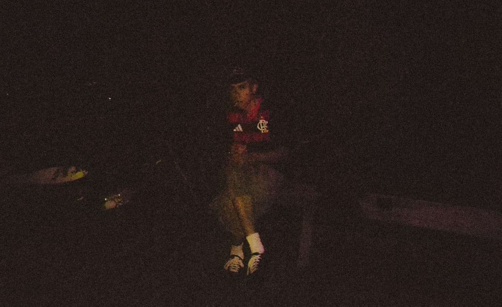

sobre
Tiago Cardoso (2007) é artista visual, natural de Cantagalo — RJ, atualmente residente em Juiz de Fora — MG e licenciando em Artes Visuais pela Universidade Federal de Juiz de Fora.
Sua pesquisa se inicia a partir das artes gráficas, começando sua produção digital entre 2021–2022. Atualmente, explora as intersecções entre linguagens diversas, sendo elas pintura, imagem digital 2D, audiovisual e música.
Sua prática se desenvolve desde 2025, em que se encontra buscando uma progressão estético-visual do seu trabalho. A tese se baseia em relações de cor, espaço e textura, com ênfase em dialogar suas demais criações das linguagens distintas entre si.
Atualmente procede com a pesquisa imagética focada nas pinturas e nas produções gráficas. Sua última divulgação, que exclui as duas linguagens citadas, vem no primeiro semestre de 2026, com a publicação do audiovisual "2026".
